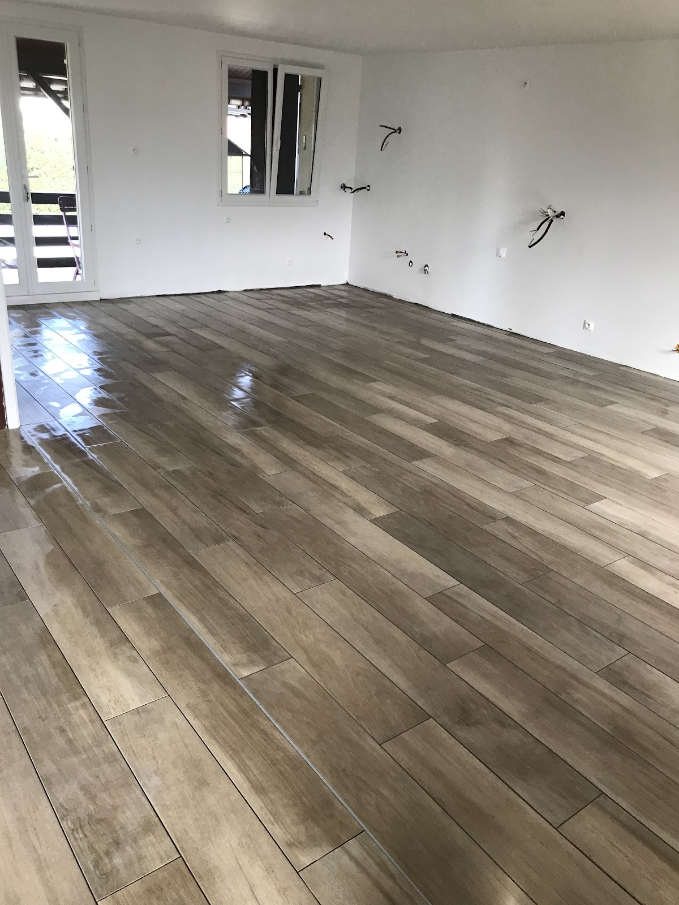
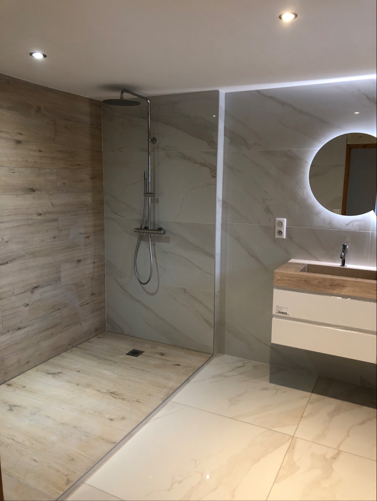
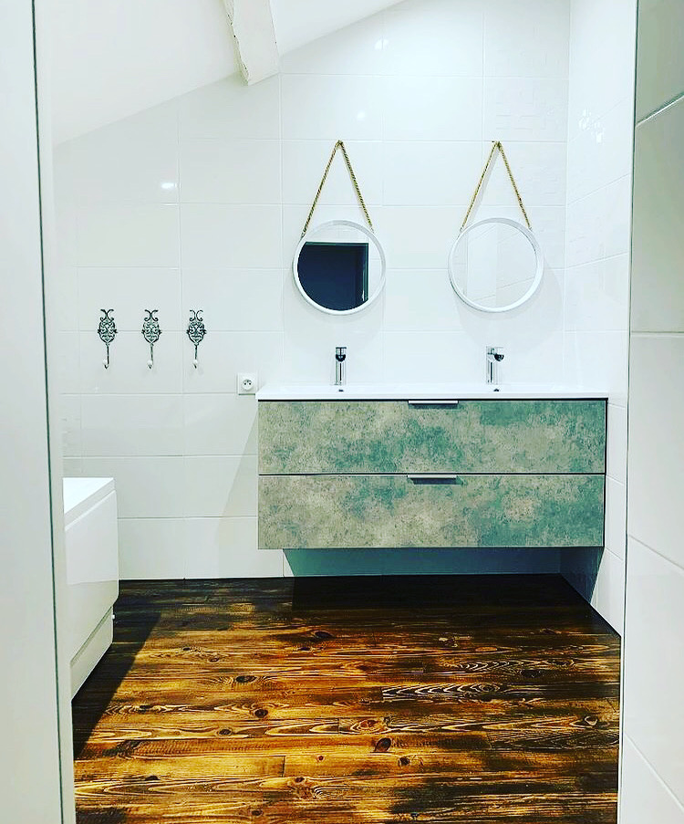
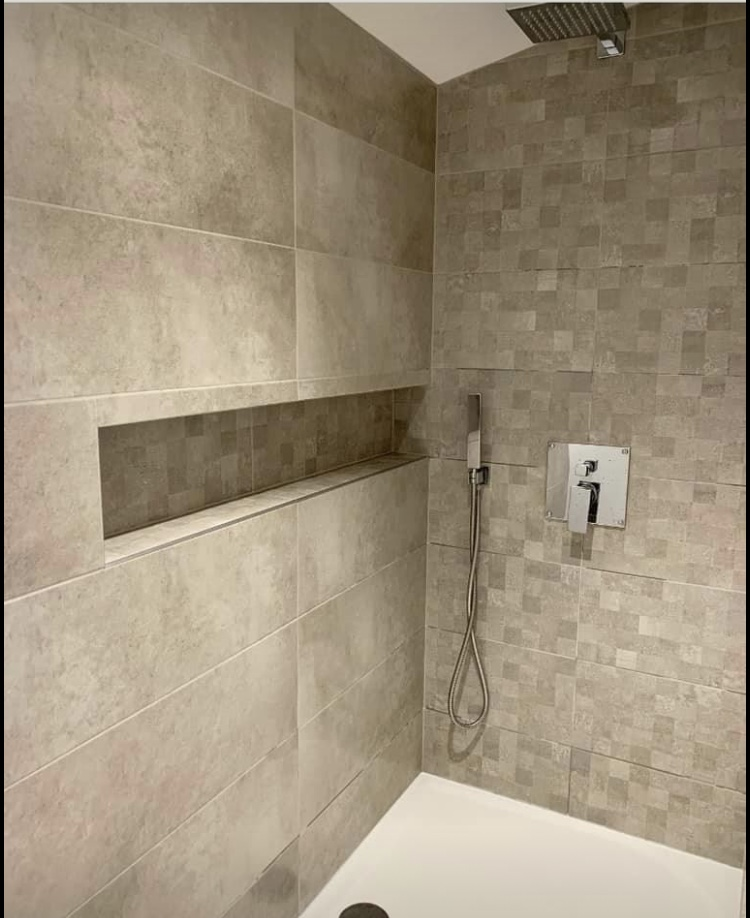
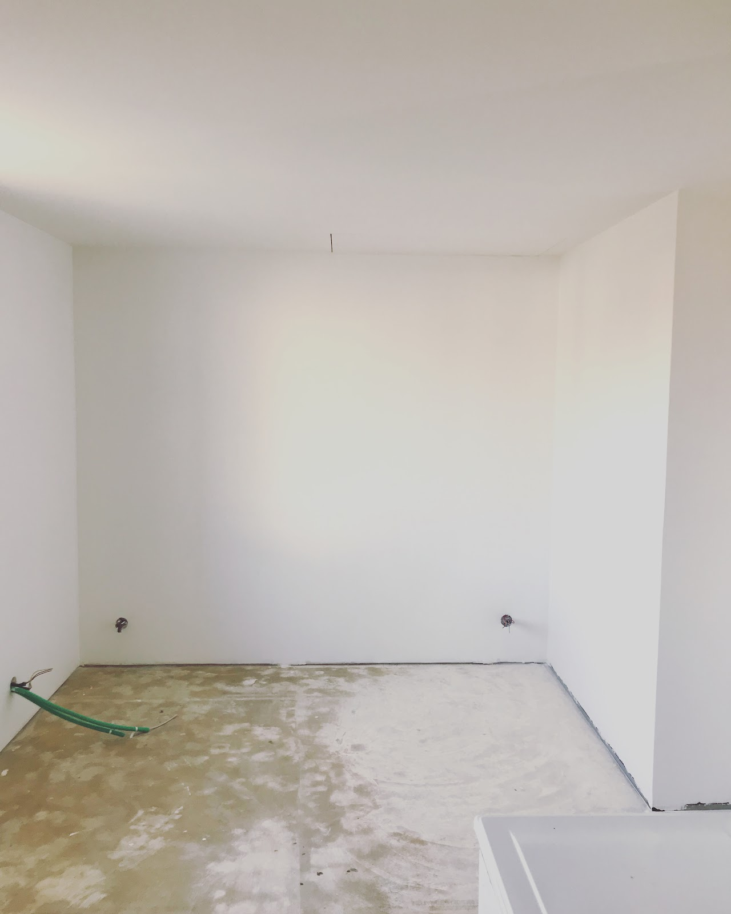
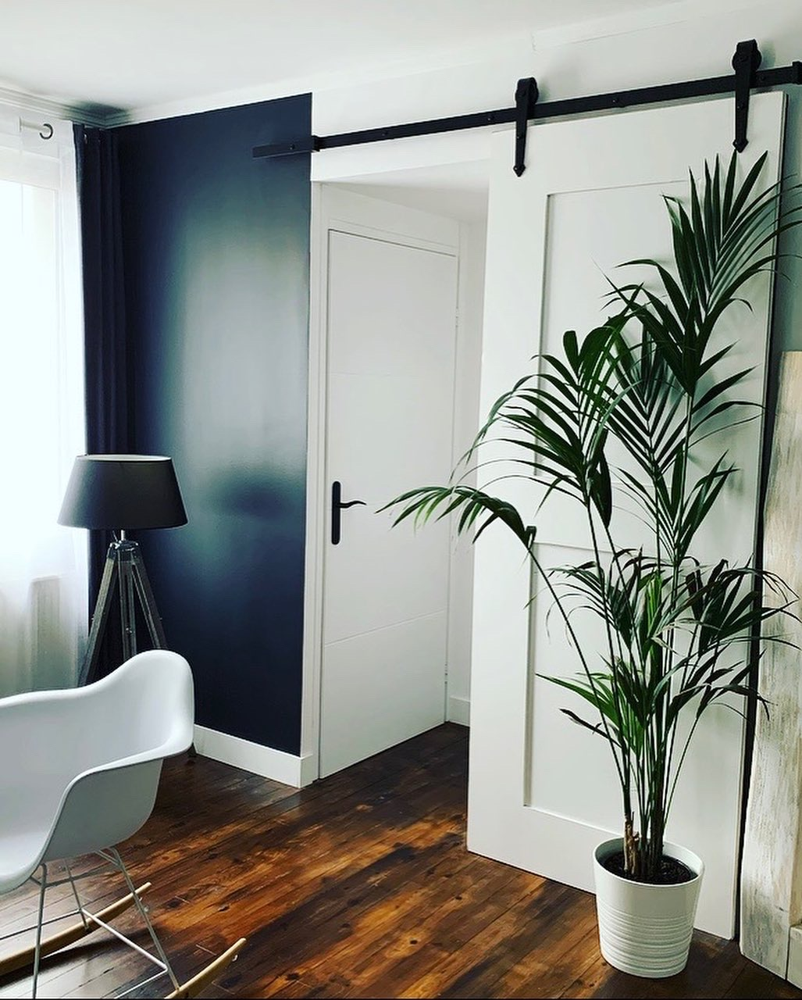
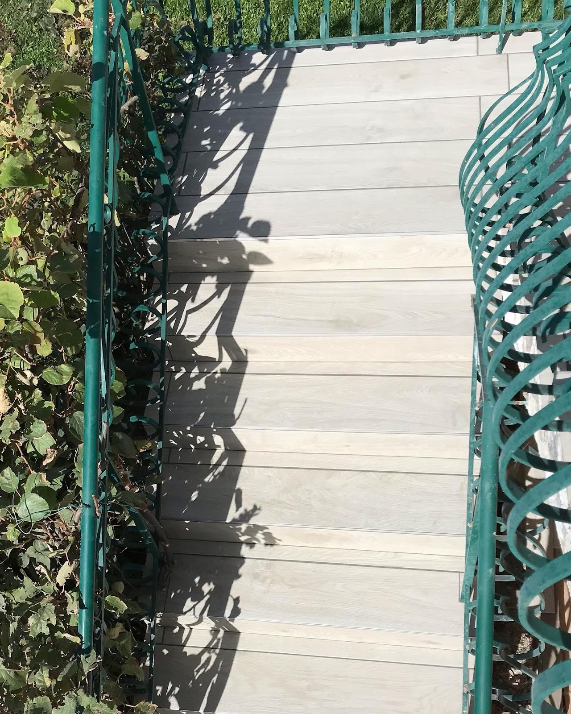
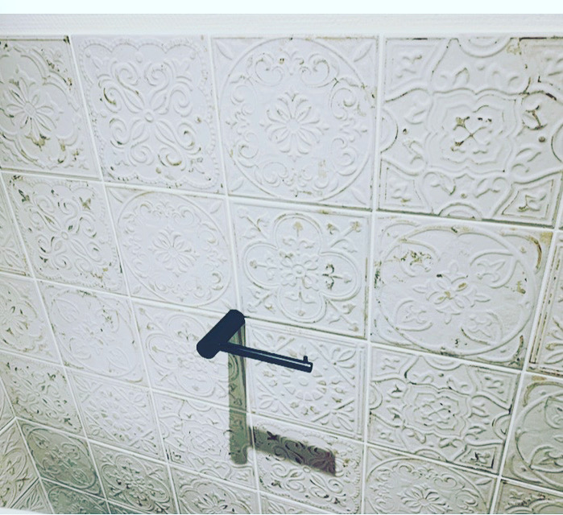
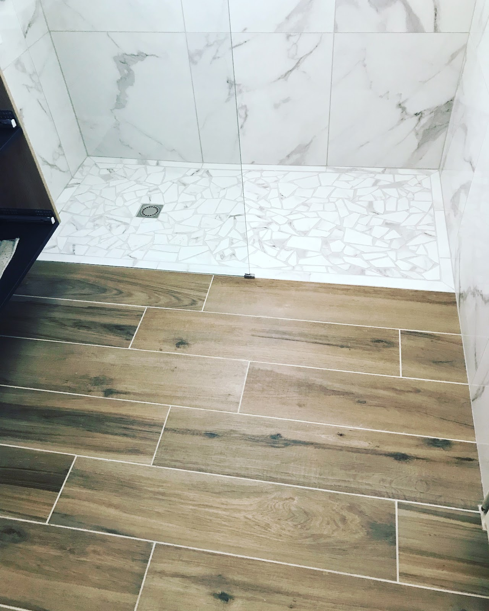
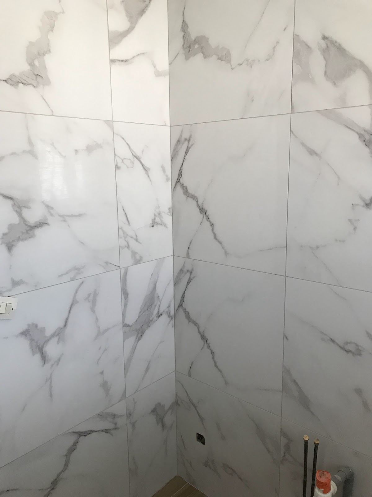

01
Carrelage sols & murs
PrécisionPose de carrelage pour sols et murs, avec une attention particulière à l’alignement, aux raccords et à la qualité visuelle de l’ensemble.

Travaux généraux, rénovation intérieure et finitions soignées — avec une attention particulière portée aux détails, aux conseils et à la propreté du chantier.


Professionnel, réactif
et de bon conseil.
Le savoir-faire
Transformer un espace, c’est d’abord soigner ce qui se voit — et ce qui ne se voit pas.
Les réalisations et avis clients mettent en avant un travail sérieux, une vraie qualité de conseil et une attention constante à la propreté du chantier.
Échanger sur votre projet ↗Pose de carrelage pour sols et murs, avec une attention particulière à l’alignement, aux raccords et à la qualité visuelle de l’ensemble.

Aménagement et rénovation de salles de bains : revêtements, douche, vasque et finitions pour obtenir un espace cohérent et agréable au quotidien.

Travaux de plâtrerie et préparation des surfaces afin de partir sur une base propre avant les revêtements et les finitions.

Des finitions pensées pour donner de la cohérence à la pièce : revêtements, intégration des équipements et soin des détails visibles.


Écoute, conseil, sérieux et qualité d’exécution : ce sont les qualités qui reviennent le plus souvent dans les retours clients.

Réalisations
Un aperçu de chantiers et finitions réalisés par LP Cataldo.


Les avis
Avant de démarrer
Pour les détails propres à votre chantier, le plus simple reste un échange direct.
LP Cataldo est référencé en travaux généraux. Les réalisations visibles et les avis clients montrent notamment des travaux de plâtrerie, de pose de carrelage aux sols et aux murs, ainsi que des aménagements et finitions intérieures.
Oui. Plusieurs réalisations présentées ici concernent des salles de bains, avec notamment des revêtements muraux et au sol, des espaces douche et des meubles vasque.
Vous pouvez appeler directement LP Cataldo au 06 14 15 87 47 pour présenter votre besoin. Cet échange permet de préciser la nature des travaux et les éléments à prendre en compte.
LP Cataldo est situé au 1 Rue du Stade, 42610 Saint-Georges-Haute-Ville. Un bouton d’itinéraire est disponible plus bas sur cette page.
Les horaires indiqués sur la fiche Google sont du lundi au vendredi, de 08:00 à 20:00. L’entreprise est indiquée comme fermée le samedi et le dimanche.
Les avis disponibles soulignent notamment le sérieux, la qualité du travail, l’écoute, les conseils, la réactivité, le respect des délais et la propreté du chantier.
Contact
UN PROJET EN TÊTE ?
Décrivez votre projet directement par téléphone. LP Cataldo est joignable du lundi au vendredi selon les horaires indiqués sur sa fiche Google.
06 14 15 87 47↗1 Rue du Stade
42610 Saint-Georges-Haute-Ville
Lun — Ven
08:00 — 20:00